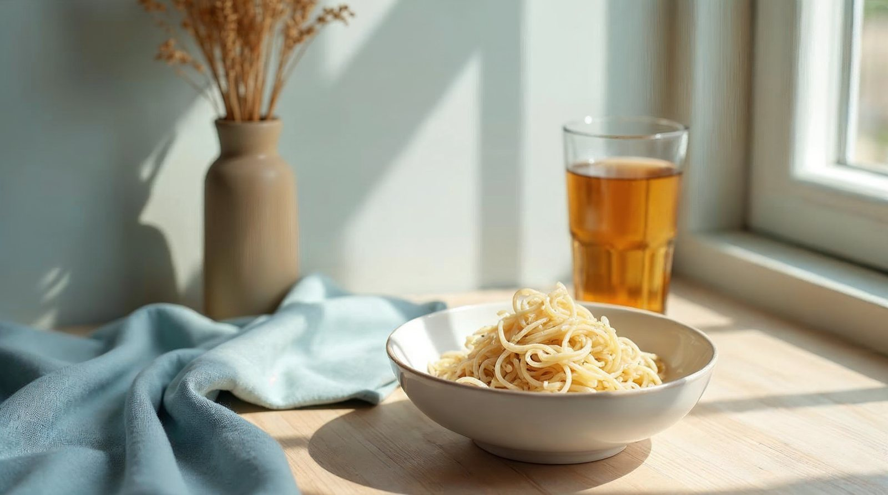
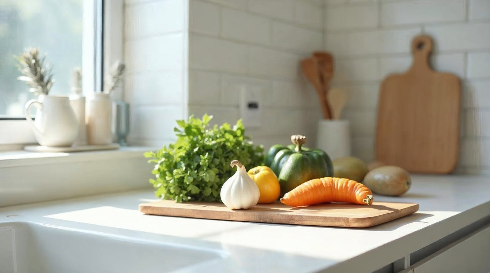
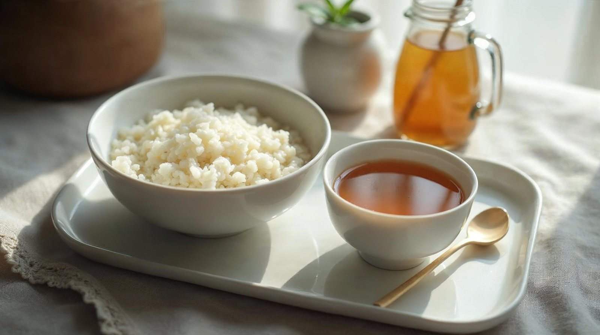
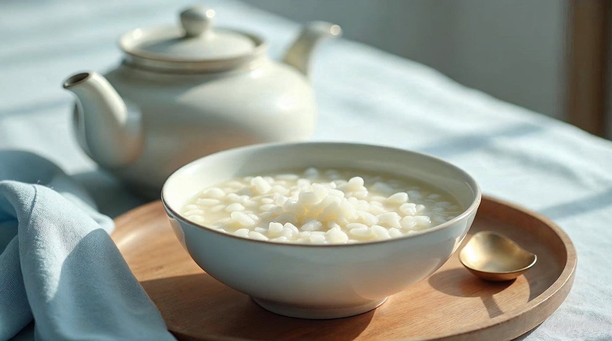
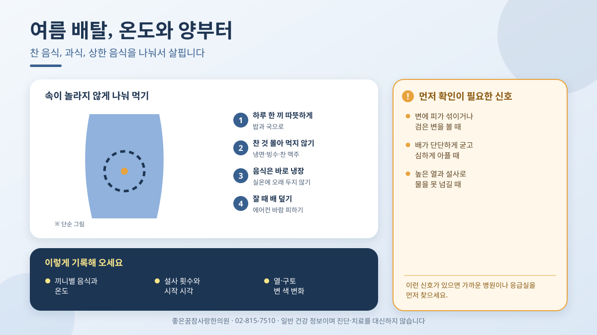

이종호 한의사 감수좋은꿈참사랑한의원 대표원장 (한의사 면허번호 19769)발행 2026-11-26 · 수정 2026-11-26
이 글의 차례
무더운 점심, 시원한 물냉면 한 그릇에 얼음 동동 띄운 아이스커피까지 마십니다. 오후 회의가 시작되고 얼마 지나지 않아 배 속이 꾸르륵거리고 아랫배가 살살 아파 옵니다. 회의 중간에 화장실을 다녀오고 나서야 겨우 한숨을 돌립니다.
여름이 되면 이런 이야기를 진료실에서 정말 자주 듣습니다. "찬 것만 먹으면 배가 탈 나요." "여름만 되면 화장실을 달고 살아요." 대부분은 하루 이틀이면 가라앉지만, 여름 내내 같은 일이 되풀이되면 일상이 꽤 불편해집니다.
여름 배탈에는 크게 세 갈래가 섞여 있습니다. 찬 음식 자체가 장을 놀라게 하는 경우, 한꺼번에 너무 많이 먹은 경우, 그리고 더운 날씨에 상한 음식을 먹은 경우입니다. 무엇이 주된 원인인지에 따라 대처가 달라지기 때문에, 오늘은 이 셋을 나눠서 차근차근 정리해 보겠습니다.
찬 음식 배탈은 어떤 모습으로 나타나나요?
찬 음식을 먹은 뒤 30분에서 몇 시간 사이에 배가 꾸르륵거리고, 아랫배나 배꼽 주변이 살살 쥐어짜듯 아파 옵니다. 화장실에 다녀오면 묽은 변을 한두 번 보고, 그 뒤로는 한결 편해지는 경우가 많습니다.
배를 손으로 감싸거나 따뜻한 것을 대면 아픔이 덜해지는 것도 특징입니다. 열은 거의 없고, 구토도 드뭅니다. 다만 배가 차가운 느낌, 가스가 차는 느낌, 입맛이 떨어지는 느낌이 하루 정도 이어질 수 있습니다.
같은 찬 음식을 먹어도 어떤 분은 멀쩡하고 어떤 분은 꼭 탈이 납니다. 평소 손발과 배가 차고, 소화가 약하며, 긴장하면 배가 먼저 아픈 분이 찬 음식에 더 예민하게 반응하는 편입니다.
왜 찬 음식을 먹으면 배가 아프고 설사를 할까요
위와 장은 체온에 가까운 온도에서 가장 편안하게 움직입니다. 얼음이 든 음료나 빙수처럼 아주 차가운 것이 한꺼번에 들어오면, 위와 장의 근육이 놀라 순간적으로 움츠러들거나 오히려 빠르게 꿈틀거립니다. 이 움직임이 쥐어짜는 듯한 복통과 꾸르륵 소리로 느껴집니다.
장이 빠르게 움직이면 음식물이 충분히 소화되고 물이 흡수될 시간이 짧아집니다. 그래서 물기가 많은 묽은 변이 나옵니다. 차가운 자극에 장이 예민하게 반응하는 분일수록 이런 흐름이 쉽게 생깁니다.
과식도 큰 몫을 합니다. 더운 날에는 입맛이 없다가 시원한 음식 앞에서 갑자기 많이 드시게 되고, 냉면에 수박에 아이스크림까지 한자리에서 이어지기도 합니다. 위와 장이 감당할 양을 넘으면 소화되지 못한 것이 아래로 빠르게 내려가며 설사가 됩니다.
여름에는 음식이 쉽게 상합니다. 실온에 오래 둔 김밥이나 회, 덜 익힌 고기, 오래 보관한 음식에서 세균이 자라면 감염성 장염이 생길 수 있습니다. 이 경우에는 찬 음식이 원인이 아니라 음식 속 세균이 원인이기 때문에, 대처도 달라집니다.
한의학에서는 찬 음식으로 속이 차가워져 소화가 더디고 설사를 하는 모습을 비위가 차가워진 상태로 설명해 왔습니다. 진찰에서 쓰는 전통적인 표현이고 따로 진단명은 아니지만, 배를 따뜻하게 지키는 생활이 왜 중요한지를 잘 보여 주는 시각입니다.
장염이나 과민성 장과는 어떻게 다른가요?
찬 음식 배탈은 대개 원인이 된 음식을 먹은 뒤 한두 번 설사를 하고 가라앉습니다. 열이 거의 없고, 배를 따뜻하게 하면 편해집니다. 함께 먹은 사람은 멀쩡한 경우가 많고, 다음 날이면 입맛도 돌아옵니다.
감염성 장염은 설사가 하루에 여러 번, 며칠 동안 이어지고, 열이나 구토, 오한이 함께 오는 경우가 많습니다. 같은 음식을 먹은 가족이나 동료가 함께 탈이 났다면 장염을 먼저 생각합니다. 장염이 의심되면 내과 진료를 먼저 받아 보시길 권합니다.
과민성 장 증후군은 찬 음식이 아니어도 긴장, 특정 음식, 생활 리듬 변화에 따라 설사와 변비, 복통이 계절과 상관없이 몇 달씩 반복됩니다. 여름에만 찬 음식 뒤에 생기는지, 일 년 내내 반복되는지를 살펴보면 둘을 나누는 데 도움이 됩니다.
유당 불내증도 함께 떠올려 볼 만합니다. 우유가 들어간 빙수, 아이스크림, 라테를 드신 뒤에만 유독 배가 아프고 설사를 하신다면, 차가움보다 우유 성분에 반응하는 것일 수 있습니다.
여름 배탈이 잦은 분들의 생활을 보면
여름 배탈이 잦은 분들의 하루를 들여다보면 비슷한 흐름이 보입니다. 아침은 거르거나 아이스커피 한 잔으로 대신하고, 점심은 냉면이나 콩국수 같은 찬 음식, 오후에는 찬 음료를 여러 잔, 저녁에는 시원한 맥주와 함께 늦은 식사를 하십니다.
이렇게 하루 내내 찬 것이 이어지면 위와 장이 따뜻해질 틈이 없습니다. 여기에 냉방된 사무실에서 배가 찬 바람을 맞고, 잠잘 때도 배를 드러낸 채 에어컨 바람 아래 주무시면 속은 더 차가워집니다.
그래서 저는 찬 음식을 아예 끊으시라고 말씀드리기보다, 하루 가운데 따뜻한 끼니 하나를 꼭 넣고 찬 것은 몰아 드시지 않도록 나눠 보시자고 권합니다. 이것만으로도 화장실 가는 횟수가 줄었다고 말씀하시는 분이 많습니다. 찬 음식을 즐기는 마음은 그대로 두고, 속이 놀라지 않을 만큼만 속도와 양을 맞춰 보자는 뜻입니다.

먼저 이렇게 여쭙니다
처음 오시면 대략 이런 순서로 여쭙니다. 미리 떠올려 오시면 이야기가 수월해집니다.
- 배가 아프기 전에 무엇을, 얼마나 드셨나요? 음식 온도는 어땠나요?
- 설사는 하루 몇 번이고, 며칠째 이어지고 있나요?
- 열, 구토, 오한이 함께 있나요?
- 같은 음식을 먹은 다른 사람도 탈이 났나요?
- 변에 피가 섞이거나 색이 검지는 않나요?
- 우유가 들어간 음식 뒤에 유독 심한가요?
- 찬 음식이 아닐 때도 배가 자주 아프신가요?
정확히 기억나지 않으셔도 괜찮습니다. '점심에 냉면 먹고 두 시간쯤 뒤부터' 같은 흐름만 말씀해 주셔도 충분합니다.
일상에서 먼저 해 볼 수 있는 것
여름 배탈은 먹는 순서와 온도, 양을 조금만 바꿔도 한결 편해지는 경우가 많습니다.
- 하루 한 끼는 따뜻한 밥과 국으로 챙기기
- 찬 음식을 먹을 때는 따뜻한 국물이나 차를 먼저 한 모금 마시기
- 얼음 든 음료는 얼음을 조금 덜어 내고 천천히 나눠 마시기
- 냉면, 빙수, 아이스크림, 찬 맥주를 한자리에서 몰아 먹지 않기
- 남은 음식은 바로 냉장 보관하고, 실온에 오래 둔 음식은 먹지 않기
- 잠잘 때 배는 얇은 이불로 덮고 에어컨 바람이 배에 닿지 않게 하기
배가 아플 때는 따뜻한 물주머니나 손으로 배꼽 주변을 감싸 주세요. 시계 방향으로 천천히 쓰다듬어 주는 것도 편안함에 도움이 될 수 있습니다. 허리를 조이는 옷은 잠시 느슨하게 풀고, 무릎을 살짝 굽혀 옆으로 누우면 배의 긴장이 덜해지기도 합니다.
설사를 한 뒤에는 물과 염분이 빠져나가기 때문에 미지근한 물이나 보리차를 조금씩 자주 드시는 것이 좋습니다. 한 번에 많이 드시면 다시 배가 놀랄 수 있으니 몇 모금씩 나눠 드세요.
설사가 가라앉은 뒤 하루 이틀은 흰죽, 미음, 바나나, 잘 익힌 감자처럼 부드럽고 소화가 쉬운 음식으로 장을 쉬게 해 주세요. 기름진 음식, 매운 음식, 술, 우유는 장이 편안해질 때까지 잠시 미뤄 두시는 것이 좋습니다.

여름 음식을 안전하게 먹으려면
여름에는 찬 음식 못지않게 음식 보관이 중요합니다. 더운 날 실온에 둔 음식은 몇 시간 만에 세균이 크게 늘어날 수 있습니다. 조리한 음식은 식힌 뒤 바로 냉장고에 넣고, 도시락이나 김밥처럼 들고 다니는 음식은 아이스팩과 함께 두었다가 되도록 일찍 드시는 것이 좋습니다.
날것과 익힌 것을 다루는 도마와 칼은 따로 쓰고, 고기와 달걀은 속까지 충분히 익혀 드세요. 조리 전과 식사 전에는 손을 비누로 꼼꼼히 씻는 것만으로도 장염의 위험을 줄이는 데 도움이 됩니다.
냉장고도 만능은 아닙니다. 냉장고 안에서도 오래 두면 음식이 상할 수 있으니, 남은 음식은 하루 이틀 안에 드시고 냄새나 맛이 조금이라도 이상하면 아깝더라도 버리시는 편이 안전합니다. 아까운 마음보다 배 속 편안함을 먼저 챙겨 주세요. 수박처럼 자른 과일도 랩을 씌워 냉장 보관하고 빨리 드세요.
여행지나 야외 행사에서 오래 놓여 있던 음식, 물을 끓이지 않고 그대로 마셔야 하는 상황도 조심하시는 것이 좋습니다. 여름 휴가 뒤에 배탈로 고생하셨다는 이야기를 자주 듣는 것도 이런 이유입니다.
아이와 어르신의 여름 배탈
아이는 어른보다 몸속 물의 비율이 높아서 설사를 몇 번만 해도 쉽게 처질 수 있습니다. 배탈이 나면 미지근한 물이나 보리차를 숟가락으로 조금씩 자주 주시고, 기저귀나 소변 횟수가 평소보다 줄지 않는지 살펴 주세요.
어르신은 목마름을 늦게 느끼시고, 드시는 약이 많아 설사 뒤 기운이 쉽게 빠지십니다. 혈압약이나 소변을 늘리는 약을 드시는 중에 설사가 이어진다면, 처방한 선생님께 약을 그대로 드셔도 되는지 여쭤보시는 것이 좋습니다.
지사제는 먹어도 될까요?
설사가 잦으면 지사제부터 찾게 됩니다. 찬 음식으로 한두 번 설사를 한 정도라면 장이 스스로 가라앉는 경우가 많아서, 굳이 약을 서두르지 않아도 됩니다.
감염성 장염일 때는 설사가 몸 밖으로 세균을 내보내는 과정이기도 해서, 지사제로 무작정 막는 것이 오히려 회복을 늦출 수 있습니다. 열이 나거나 설사가 여러 번 이어진다면 약을 드시기 전에 내과에서 먼저 진료를 받아 보시길 권합니다.
드시는 약이 많거나 어르신이라면 약국에서 약을 사실 때도 평소 드시는 약을 말씀해 주세요. 약끼리 겹치거나 서로 영향을 주는 일이 없는지 확인하는 것이 좋습니다.

한의원에서 함께 살필 수 있는 경우
- 여름마다 찬 음식 뒤 배가 아프고 묽은 변이 반복되는 경우
- 배와 손발이 늘 차고 소화가 더딘 경우
- 장염을 앓은 뒤 장이 예민해져 쉽게 탈이 나는 경우
- 냉방된 곳에서 지내면 배가 살살 아프고 가스가 차는 경우
- 배탈 뒤 입맛이 오래 돌아오지 않고 기운이 없는 경우
좋은꿈참사랑한의원에 오시면 먼저 아래 '먼저 확인이 필요한' 신호가 없는지부터 봅니다. 그다음 맥을 짚고, 배를 직접 눌러 보며 차갑거나 굳은 곳, 아픈 자리를 확인합니다. 대변의 모양과 횟수, 잠과 식사 시간도 함께 여쭙습니다.
진찰 내용을 바탕으로 식사 습관에서 바꿔 볼 것 하나와 함께 침, 온열 관리, 한약 상담 가운데 지금 상태에 맞는 것을 정합니다. 한약을 상의할 때는 드시는 약을 먼저 확인하고 신중하게 정하며, 임신 중이시거나 가능성이 있다면 먼저 알려 주세요. 산부인과 선생님과 상의하는 것이 우선입니다.
장염 치료를 받고 계시거나 약을 처방받으셨다면 그 약은 상의 없이 멈추지 않습니다. 한의원 진료는 내과 진료와 나란히 장의 회복과 생활 습관을 함께 살피는 쪽으로 갑니다.
이렇게 기록해 오시면 상담이 쉬워집니다
일주일 정도 간단히 적어 보시면, 어떤 음식과 상황에서 배가 탈이 나는지 흐름이 보입니다.
- 끼니마다 드신 음식과 대략의 온도(따뜻함, 찬 것, 얼음)
- 찬 음료와 아이스커피를 마신 잔 수
- 배가 아프기 시작한 시각과 설사 횟수
- 열, 구토, 변 색의 변화가 있었는지
- 우유가 들어간 음식을 먹은 날 표시
- 잠잘 때 에어컨을 켰는지, 배를 덮었는지
기록을 보시면 생각보다 찬 것이 하루 내내 이어진 날, 한자리에서 몰아 먹은 날에 탈이 나는 경우가 많다는 것을 직접 확인하실 수 있습니다.

여름 배를 지키는 작은 습관
여름 배탈은 장이 약해서라기보다, 더위 속에서 찬 것을 찾는 몸의 자연스러운 흐름과 장이 감당할 수 있는 범위 사이에 틈이 생긴 결과에 가깝습니다. 그 틈을 조금 좁혀 주면 됩니다.
이번 주에는 하루 한 끼 따뜻한 국물 챙기기, 찬 음료 얼음 덜어 내기, 잠잘 때 배 덮기 가운데 하나만 골라 보세요. 다음에 오시면 일주일 기록을 함께 펼쳐 보며 배가 편했던 날과 불편했던 날을 같이 비교해 보겠습니다.
이런 증상은 먼저 확인이 필요합니다
- 변에 피가 섞이거나 검은 변을 보는 경우, 또는 배가 단단하게 굳고 심하게 아픈 경우
- 높은 열과 함께 설사·구토가 이어져 물을 넘기지 못하고 소변이 크게 줄어든 경우
이런 신호가 있으면 한의원보다 가까운 병원이나 응급실을 먼저 찾으세요.
함께 읽으면 좋은 글
- 찬 음식이나 찬 음료를 먹으면 배가 아플 때는 어떻게 하나요?
- 장염을 앓고 난 뒤 장이 예전 같지 않을 때, 회복기에는 무엇을 살피나요?
- 배가 자주 아프고 설사·변비가 반복되는 과민성 장 증후군은 어떻게 살피나요?
- 아침마다 배가 꾸르륵거리고 급하게 화장실을 찾게 되는 설사형 과민성 장은 어떻게 살피나요?
- 소화가 오래 불편할 때 한의원에서는 무엇을 먼저 묻나요?

여쭙는 것
- 배가 아프기 전에 무엇을, 얼마나 드셨나요? 음식 온도는 어땠나요?
- 설사는 하루 몇 번이고, 며칠째 이어지고 있나요?
- 열, 구토, 오한이 함께 있나요?
생활에서 해 볼 것
- 하루 한 끼는 따뜻한 밥과 국으로 챙기기
- 찬 음식을 먹을 때는 따뜻한 국물이나 차를 먼저 한 모금 마시기
- 얼음 든 음료는 얼음을 조금 덜어 내고 천천히 나눠 마시기
한의원에서 함께 살필 것
- 여름마다 찬 음식 뒤 배가 아프고 묽은 변이 반복되는 경우
- 배와 손발이 늘 차고 소화가 더딘 경우
- 장염을 앓은 뒤 장이 예민해져 쉽게 탈이 나는 경우
먼저 확인이 필요한 신호
- 변에 피가 섞이거나 검은 변을 보는 경우, 또는 배가 단단하게 굳고 심하게 아픈 경우
- 높은 열과 함께 설사·구토가 이어져 물을 넘기지 못하고 소변이 크게 줄어든 경우
한눈에 보는 표
| 구분 | 핵심 |
|---|---|
| 여쭙는 것 | 배가 아프기 전에 무엇을, 얼마나 드셨나요? 음식 온도는 어땠나요? 설사는 하루 몇 번이고, 며칠째 이어지고 있나요? |
| 생활에서 해 볼 것 | 하루 한 끼는 따뜻한 밥과 국으로 챙기기 찬 음식을 먹을 때는 따뜻한 국물이나 차를 먼저 한 모금 마시기 |
| 한의원에서 함께 살필 것 | 여름마다 찬 음식 뒤 배가 아프고 묽은 변이 반복되는 경우 배와 손발이 늘 차고 소화가 더딘 경우 |
| 먼저 확인이 필요한 신호 | 변에 피가 섞이거나 검은 변을 보는 경우, 또는 배가 단단하게 굳고 심하게 아픈 경우 높은 열과 함께 설사·구토가 이어져 물을 넘기지 못하고 소변이 크게 줄어든 경우 |
자주 묻는 질문
찬 음식을 먹으면 배가 아픈데 아예 끊어야 하나요?
끊기보다 양과 순서를 조절해 보시길 권합니다. 따뜻한 끼니를 하루 한 번 넣고, 찬 것은 몰아 드시지 않도록 나누면 한결 편해지는 분이 많습니다.
설사할 때 물을 마시면 더 심해지지 않나요?
설사로 빠져나간 물과 염분은 채워 주셔야 합니다. 미지근한 물이나 보리차를 몇 모금씩 자주 드시는 방법을 권합니다.
아이가 빙수를 먹고 배가 아프다고 할 때는 어떻게 하나요?
배를 따뜻하게 감싸 주고 미지근한 물을 조금씩 주세요. 열이 나거나 설사가 여러 번 이어지면 소아청소년과 진료를 먼저 받아 보세요.
여름 배탈에 한약을 먹어도 되나요?
진찰을 해 보고 지금 상태에 맞는지 먼저 살핍니다. 감염성 장염이 의심되면 내과 진료를 먼저 권해 드리고, 한약은 드시는 약을 확인한 뒤 신중하게 상의해서 정합니다.
찬 음식 배탈과 장염은 어떻게 구분하나요?
열과 구토가 함께 있는지, 설사가 며칠째 여러 번 이어지는지, 같은 음식을 먹은 사람도 탈이 났는지를 보시면 도움이 됩니다. 헷갈리시면 내과 진료로 먼저 확인해 보세요.
좋은꿈참사랑한의원은 재진 때 지난번 이야기부터 이어서 여쭙니다. 진료시간과 예약은 오시는 길에서 확인하세요.
어디서 상담받을 수 있나요?
좋은꿈참사랑한의원은 서울 동작구 만양로2길 2 신성빌딩 3층·5층(서울 동작구 상도동, 7호선 상도역 3번 출구 근처)에 있습니다. 한의사 3명(이종호 대표원장, 조영기 수석진료원장, 정원영 진료원장)이 진료합니다. 진료시간은 평일 09:30~20:00(점심 13:00~14:00), 토·일·공휴일 09:30~15:00이며, 방문 전 전화로 확인을 권합니다. 예약은 네이버 예약, 카카오톡 상담, 전화 02-815-7510로 받습니다.
이 글은 일반적인 건강 정보이며 개인의 진단이나 치료를 대신하지 않습니다. 증상이 있거나 복용 중인 약이 있다면 진료를 통해 확인하세요. 치료 효과는 개인마다 다를 수 있습니다.
작성 기준: 일반적으로 알려져 있는 건강 정보를 참고해 정리했습니다(대표원장 감수). 증상 기록은 1~2주 동안 하루 1회, 비슷한 시간에 적어 오시면 지난 상태와 비교하기 쉽습니다.